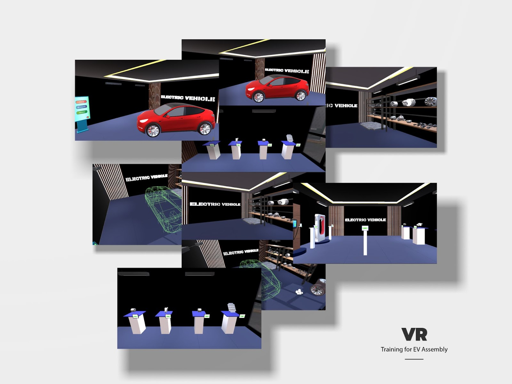
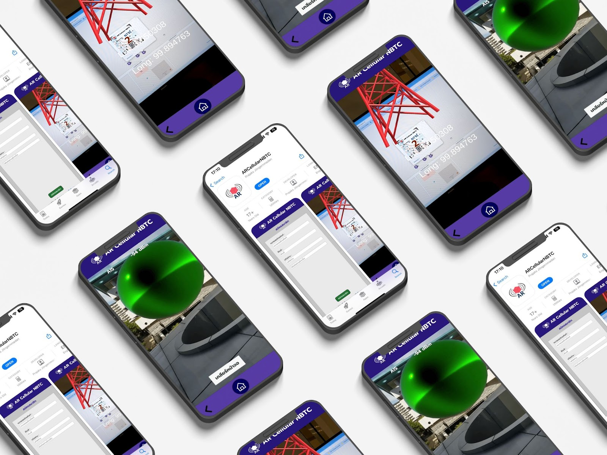
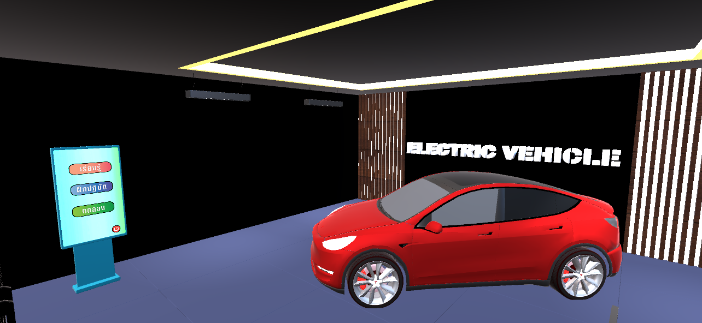
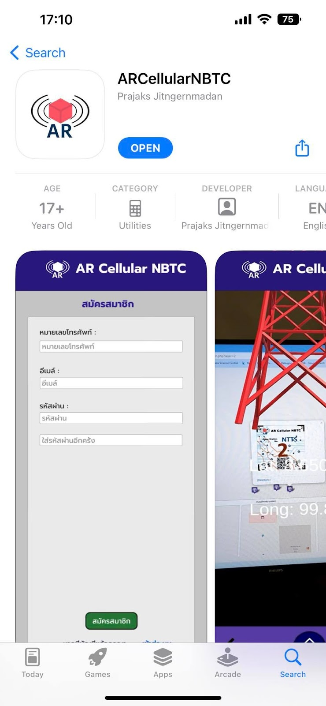
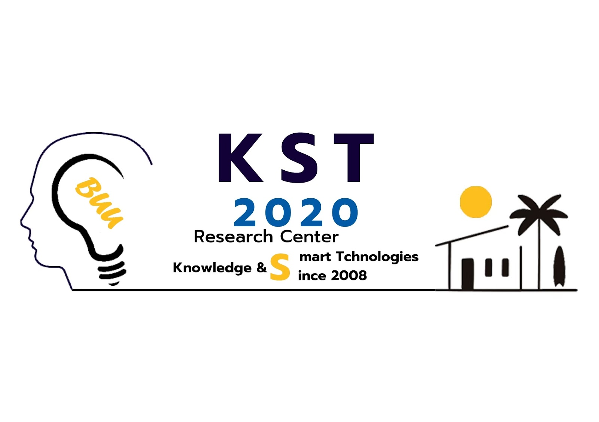
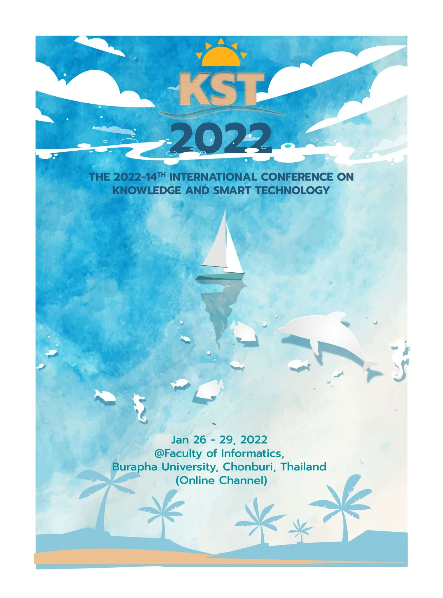
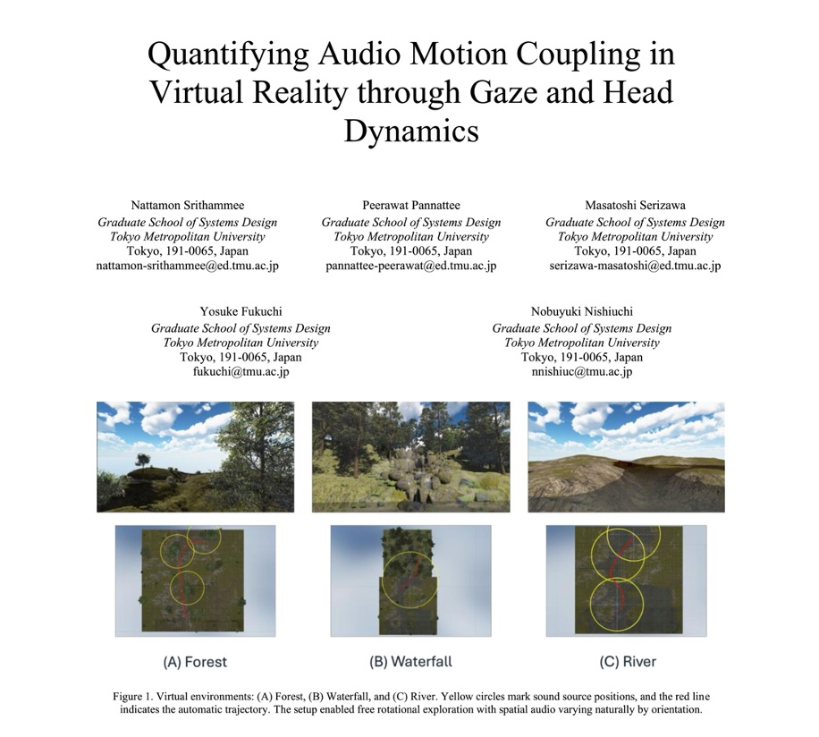
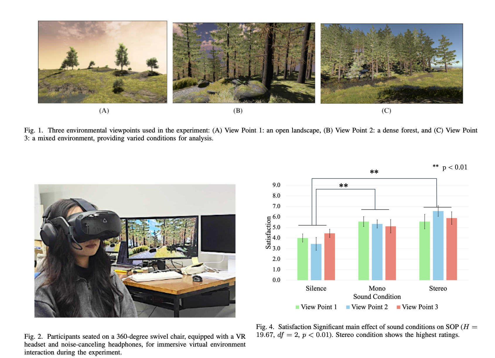
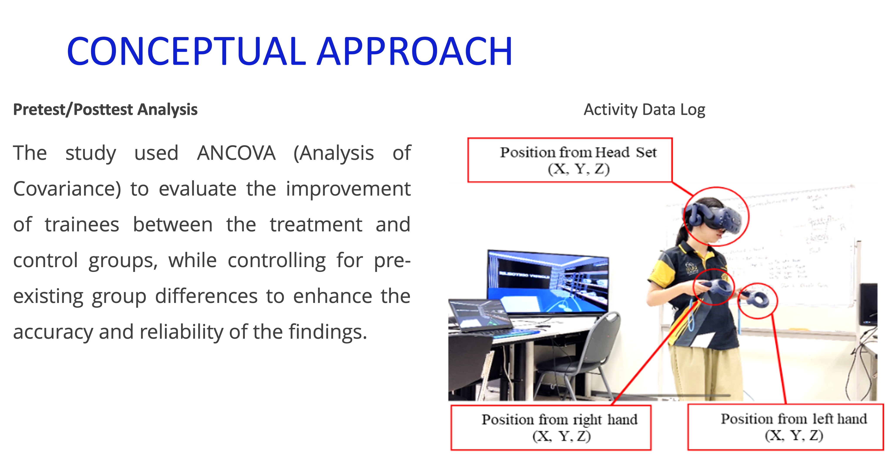
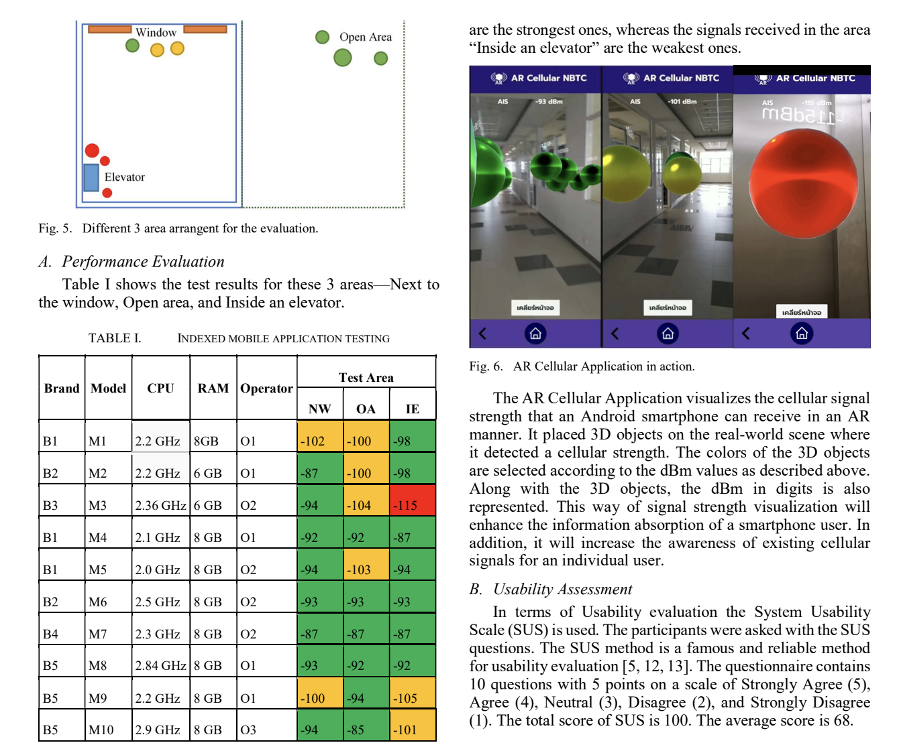

Nattamon Srithammee
Researching audio-visual perception in VR — bridging spatial audio, computer vision, and human behaviour to build more intelligent immersive systems.
My research investigates how spatial audio design shapes human perception, movement, and experience in virtual reality. Using multimodal measurement — gaze tracking, head dynamics, and physiological signals — I work to establish empirical foundations for audio-driven immersion and presence. The broader goal is to advance evidence-based principles for designing VR environments that engage the full sensory system.
A Study on the Influence of Audio on
User Experience in Virtual Reality
How does sound shape what we perceive, how we move, and how immersed we feel in virtual environments? This research applies multimodal measurement — gaze tracking, head movement dynamics, physiological signals, and subjective ratings — to quantify the perceptual and behavioural effects of spatial audio design in VR.
Researcher.
Developer. Designer.
Ph.D. student in Computer Science at Tokyo Metropolitan University (Year 2), researching how audio design shapes user experience in virtual reality. My work sits at the intersection of immersive technology, perceptual psychology, and interaction design — with applications in smart environments and connected spaces.
With hands-on experience in AR/VR development, multimodal sensing, Python/PyTorch, and user research, I bridge engineering depth with human-centred thinking. Originally from Thailand, I am now based in Tokyo and actively seeking research internship roles in audio-visual perception or immersive technology — ideally at an R&D lab where human-centred research meets real-world product impact.
Languages
Work Eligibility · Japan
📍 Based in Tokyo, Japan
🎓 Status: Student Visa
✅ Eligible to convert to Work Visa upon graduation
Open to visa sponsorship from prospective employers.
Tech Stack
Work History
- Computer Art & Graphic Design
- Python for Beginners
- 3D Modelling with Blender 3.5
- Illustrator for Infographic Design
- Augmented and Virtual Reality (48 hrs)
- UI/UX Design (74 hrs)
- Game Development (48 hrs)
- Natural Language Processing (90 hrs)
- Business Intelligence & Data Visualisation (22 hrs)
- Programming Fundamentals (48 hrs)
- Designed web pages using the Angular framework
- Built UI components with Angular Material and FullCalendar
- Created graphics with Adobe Photoshop and Illustrator
Research History
- Analysing head and gaze dynamics under varying spatial audio conditions in VR.
- Developed automated Python pipelines to process 60 Hz sensor streams using quaternion orientation and kinematic feature extraction (angular velocity, acceleration, jerk).
- Designed controlled user studies to quantify correlations between audio-visual stimuli and behavioural responses using statistical modelling and machine learning.
- Developed a 3D simulation system for artillery forward observer training using immersive virtual environments.
- Implemented first-person training scenarios for target identification and explosion adjustment.
- Designed interactive controls for directional correction of artillery strikes (left, right, front, back, up, down).
- Integrated terrain simulation, day/night environmental conditions, and realistic explosion visual effects.
- Implemented logging functions to record training data including explosion position and training duration.
- Engineered high-fidelity VR/AR training systems for industrial applications, leading to multiple peer-reviewed publications.
- Implemented data logging systems to capture user behaviour within Unity, enabling evidence-based UX evaluation.
- Collaborated with cross-functional teams to deploy XR solutions for workforce skill assessment.
- Developed a mobile AR application using AR Foundation to visualise complex 3D geometric structures.
- Integrated spatial interaction modules that improved students' spatial reasoning through active learning.
Academic Background
Thesis: A Study on the Influence of Audio on User Experience in Virtual Reality
Topic: Course Training Registration UI Design and Employee Leave System Development
Credentials
Awards & Competitions
Representing Burapha University, Thailand. Developed a VR-based industrial training platform simulating real PLCnext automation environments for hands-on learning. Applied sophisticated didactics strategy to simplify complex Industry 4.0 concepts, with immediate feedback to accelerate skill acquisition.
Featured Projects

VR@Train — Industrial VR Training System
A VR platform simulating PLCnext automation environments for hands-on industrial training. Applied didactic strategies to simplify Industry 4.0 concepts with real-time performance feedback. Awarded 4th place internationally at the Phoenix Contact xplore Technology Award 2023 across 50+ countries.

ARCellularNBTC — Signal Awareness in AR
An AR mobile application that overlays real-time cellular signal strength as spatial visualizations, enabling users to intuitively understand network coverage in their physical environment. Published at IEEE ICTC 2022.

Holistic VR Training Assessment Framework
A framework for evaluating the effectiveness of VR industrial training using multimodal activity data — combining motion tracking, task completion metrics, and user performance ratings. M.Sc. thesis project. Presented at IC2IT 2023 (Springer Nature).
Design Gallery







Publications
Key Findings




Get In Touch
Currently open to full-time opportunities in Japan. Please don't hesitate to reach out.